在易语言中编译模式共分为三种：
1、普通编译：发布时必须带上支持库(fne、fnr)才能运行。
2、独立编译：把支持库(fne、fnr)打包进EXE，运行时释放到临时目录(接近自解压的RAR)；
3、静态编译：把静态支持库(LIB)编译进EXE，直接成为一体,不再释放(和VC一样)。
在火山视窗中有两种编译模式：
1、普通编译：如果软件所使用的类库需要依赖DLL文件才可以运行，则发布时必须带上DLL才能运行。
2、静态编译：可以将类库所使用的的静态库文件(lib)编译进exe文件中、无需dll即可运行。
火山视窗编译注意事项：
1、无论是普通编译还是静态编译都需要vs编译器才可以编译。
2、并非所有类库都支持静态编译，如果设置静态编译后依然有dll文件输出，就证明软件所使用的类库并不支持静态编译。
3、火山默认提供的vs编译器是2019版本，所编译的程序不支持在xp系统运行，想要支持在xp系统中运行，需要自行下载vs2017（包含及以下版本）。
易语言编译环境配置：
在易语言中普通编译和独立编译不需要vc链接器就可以进行编译，而静态编译则需要vc链接器才可以编译，具体可看易语言新手用户手册。
火山视窗编译环境配置：
在官网中，可以看到“相关附属资源下载”栏目，此栏目中提供了火山视窗编译所需要的sdk包，下载自己所需要的即可。
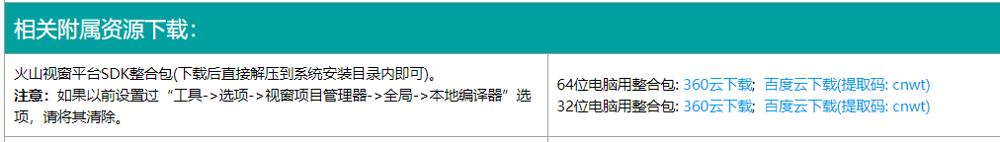
如下图为64位sdk下载后：
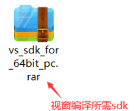
打开下载好的sdk压缩包后，会看到一个“vs_sdk.rar”的压缩包，继续打开此压缩包会看到一个“plugins”文件夹，将这个文件夹解压到火山平台的安装路径即可。
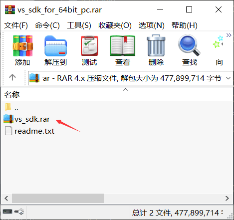
如果是自行下载的vs编译器，点击“工具->选项”菜单进入系统设置，选择“视窗项目管理器”，设置“本地编译器”版本，如果未能识别到，可以直接提供VS编译器路径。
点击可查看《VS2019生成工具使用教程》，推荐自行下载生成工具进行编译程序。
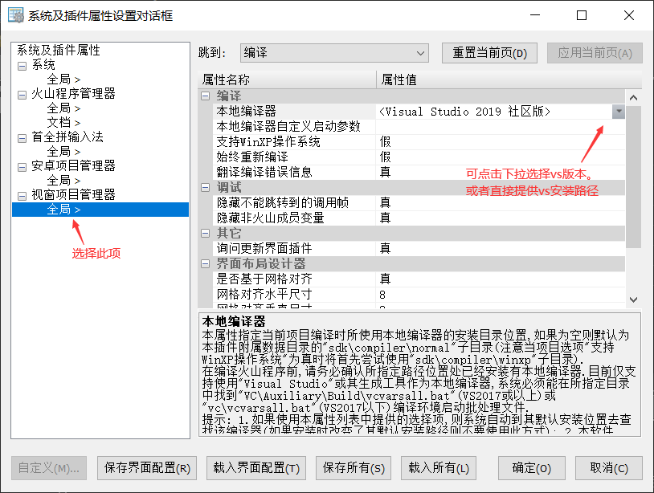
程序调试：
火山视窗的程序调试和易语言一致，按快捷键F5或点击下图中的三角按钮即可调试程序。
易语言程序调试：
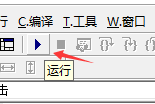
火山程序调试：
注：调试程序也需要配置好编译环境后才可以调试。如果遇到程序无法调试的问题，可以尝试点击菜单“生成->清理解决方案”清理后重新调试。
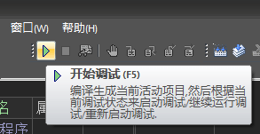
普通编译：
易语言普通编译：
通过菜单“编译->编译”进行普通编译。
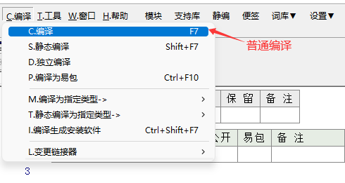
易语言进行普通编译后会依赖易支持库文件，不同的功能会输出不同的库文件。
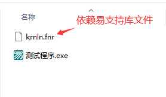
火山视窗普通编译：
因为火山软件开发平台是多项目管理模式，因此在编译之前要确定当前项目是否为活动项目。
最简单的办法可以通过项目颜色来区分，如果要编译的项目文本颜色为蓝色，则证明当前项目为活动项目。
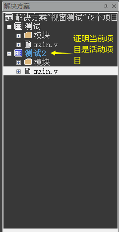
确认要编译的项目是活动项目后，通过“生成-生成活动项目”菜单即可完成普通编译。
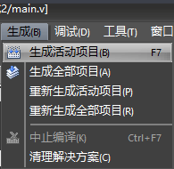
编译完成后在程序输出栏可以看到程序输出位置，双击可以跳转。
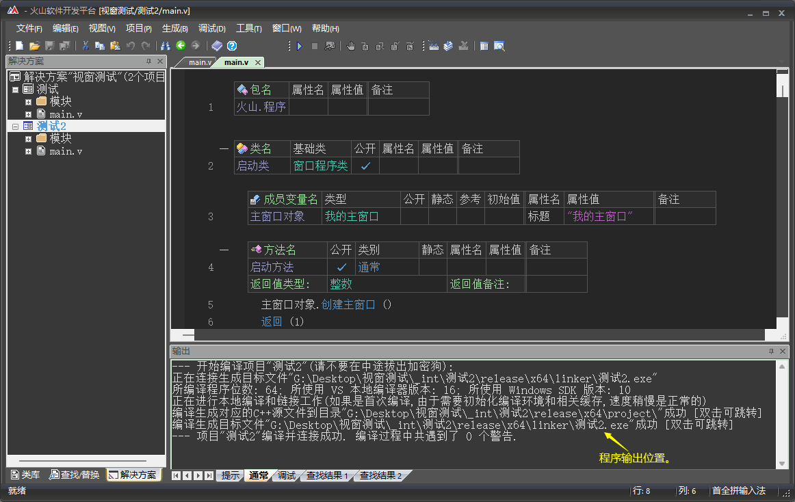
如果所编写的程序需要依赖DLL文件，会在程序输出位置看到这些DLL文件，除了“out”文件夹之外，其它的所有文件都是发布程序所需要的文件。
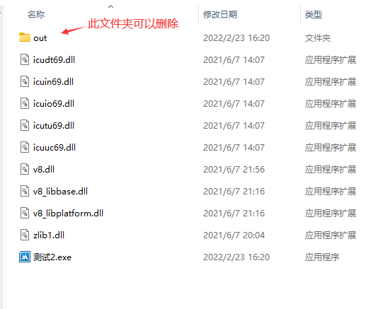
静态编译：
易语言静态编译：
在易语言中使用静态编译需要使用vc链接器，推荐使用vc6版本。
下载后手动修改易语言安装路径下“tools\link.ini”文件中的相关配置项。
在link.ini文件中找到“linker”配置项，然后设置链接器路径。
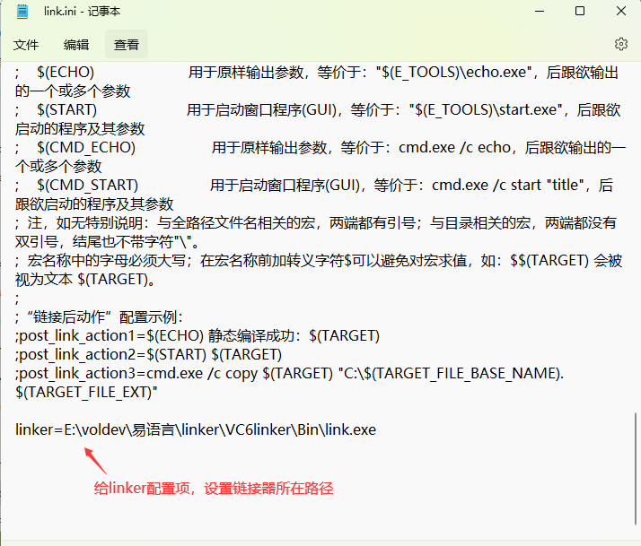
火山视窗静态编译：
鼠标右键项目，选择“属性”。
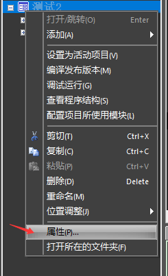
找到“火山模块链接方式”选择“静态”即可，如果所使用的火山模块(类库)支持静态编译，最终“生成活动项目”时就会进行静态编译操作，如果不支持静态编译并且依赖了DLL动态链接库、编译完成后会输出DLL文件。
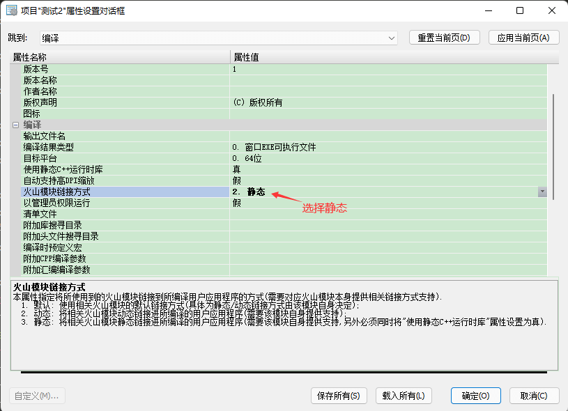